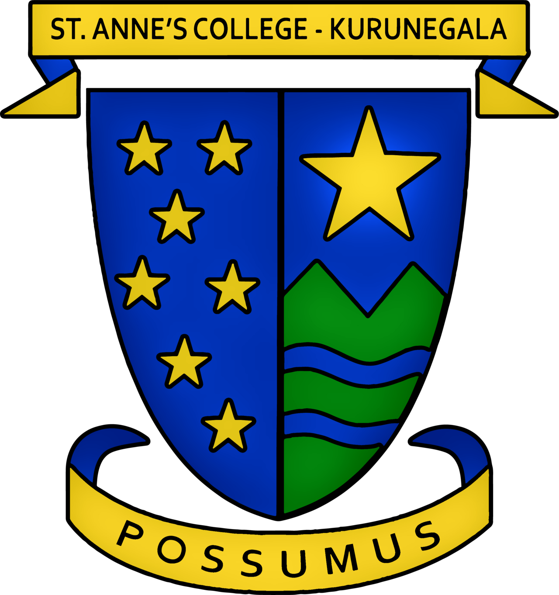

Web Developer | Scientific Research | Robotic AI Innovator | Graphic Designer
Welcome to my profile! I am Joel De Silva, a student at St. Anne's College, Kurunegala, guided by my Catholic faith and driven by a deep curiosity about how the world and the universe work. My journey is centered around the intersection of technology, science, and creativity. Whether I am building functional web applications, diving into scientific research, or experimenting with robotic AI innovations, I am constantly looking for ways to push boundaries and solve complex problems. As an aspiring AI Engineer, I aim to combine logic, coding, and scientific inquiry to build intelligent systems that can make a meaningful impact.

Proudly carrying the values of an Annite, I study at St. Anne's College, Kurunegala—a premier Catholic institution with a rich heritage dating back to 1867. Guided by our powerful school motto, "Possumus" (Latin for "We Can"), and grounded by my Catholic faith, I strive to approach every challenge in technology and science with resilience, discipline, and purpose.
A futuristic, space-themed interactive portfolio designed to showcase web development projects, astrophysics interests, and school pride with a dynamic user interface.
A browser-based robotics simulation project where an AI agent navigates custom tracks, avoids obstacles, and optimizes its route in real-time.
A data-driven scientific research tool that analyzes astronomical datasets to evaluate and score whether newly discovered exoplanets could support life.
dracowarrior.rds2013@gmail.com